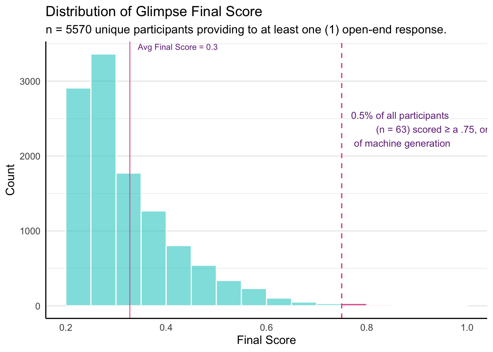

# args = argparse.Namespace(
# scoring_model_name="davinci-002",
# api_base="https://api.openai.com/v1",
# api_key=os.environ["OPENAI_API_KEY"],
# api_version="2023-09-15-preview",
# estimator="geometric",
# prompt="prompt3",
# rank_size=1000,
# top_k=5,
# )SAY24 LLM Zero-Shot Analysis using Glimpse
Abstract
Open end responses provided to the May 2025 SAY24 survey effort have been analysed using Glimpse, an open source python based package avaliable on Github. Glimpse is a tool that follows the methods in outlined in ‘Glimpse: Enabling White-Box Methods to Use Proprietary Models for Zero-Shot LLM-Generated Text Detection’ (Bao, et al., 2025). All open-end questions are passed through the Glimpse detection model, with modifications aimed at multi-response analysis. The final output is a data frame containing the probability of machine generation (AI generated). Further exploritory analysis using the glimpse model is included to see the variance in results of single response strings (isolated) versus a concatination of all responses provided by an individual (grouped). Both results are averaged to provide a final probability of machine generation.
Introduction
Zero shot models for LLM text detection are an attempt to produce clear, quantifiable results when analyzing open end responses without requirement of extensive model training. An introductory statement provided by s Bao, et al. 2025:
“Glimpse serves as a bridge between white-box methods, which rely on local LLMs for scoring, and proprietary LLMs. It estimates full distributions based on partial observations from API-based models. Our empirical analysis demonstrates that detection methods leveraging these estimated distributions achieve detection accuracies comparable to those obtained using real distributions.”
At YouGov panelists are compensated for their honest participation in our surveys. As a result, it is in our best interest to explore and develop as many tools as possible for intercepting fraudulent behavior. Here we explore the Glimpse package (Bao, et al., 2025) as another facet in YouGov’s fraud defense.
Methodology
All modifications to the base Glimpse package have been related to input and output of large datasets. The base Glimpse model has not currently be altered and full explaination (whitebox) of the Glimpse methodology can be found in Bao, et al. 2025.
The Davinci-002 LLM model from OpenAI is used with the following settings provided to Glimpse:
local_batch_infer.py
The modified function local_batch_infer.py is based on local_infer.py in the Glimpse package produced by Bao, et al., 2025. It allows for a specified pandas data frame (df), a specified response column (text) and standard suite of arguments (args) to step through each row and output the results of the Glimpse function analysis. The output contains appended columns prob_machine_generated, n_tokens, and glimpse_criterion.
The initial data set given to local_batch_infer.py is generated in R, distilling any open-ended responses into a concise question and response frame for analysis. Using the SAY24 survey results the following OE questions were acquired:
NOTE: pid = political id, or self identified party affiliation
“why_moved_to_current_state”
“why_think_pid”
“why_are_pid”
“when_think_pid”
“why_think_pid_with_when”
“when_decided_pid”
“why_are_pid_with_when”
Not all participants responded to (or may have not been asked) all open-end questions listed here. The initial SAY24 data set used here is anyone who provided at least one (1) response to any of these questions.
runner_PYside.py
This script is used to gather the results from local_batch_infer.py into a final output table. It pulls from /py_fodder, which contains .csv files of OE response vectors for each OE question, and returns the appended data frame of that single question. These results are saved to /r_src/py_results/ .
runner_Rside.R
To pull the results together into a clean data frame, files saved to /r_src/py_results are then pulled into R for easier manipulation. Here the final table is prepared, and additional exploratory columns are created before sending them back through the glimpse model to evaluate the grouped text string (full_text).
Essentially, all cleaning and preparation tasks are preformed in R, and anything that needs passed through the Glimpse model is processed with Python.
After two rounds of local_batch_infer.py, the final output is saved to r_src/outputs/. It contains the following columns:
person_id, question, text, prob_machine_generated, n_tokens, glimpse_criterion, full_text, prob_machine_generated_full, n_tokens_full, glimpse_criterion_full, and final_avg.
Results
Looking at the distribution of final_score we see and average of .30 (30%) chance of machine generation across all participants that responded at least once. 99.5% of all participants have a less than 75% chance of being machine generated, indicating a low incidence rate of machine generation responses during this wave.
Histogram

Output Table Preview
This table contains the first 100 rows of the final output table (n = 12288).
| ...1 | person_id | question | text | prob_machine_generated | n_tokens | glimpse_criterion | full_text | prob_machine_generated_full | n_tokens_full | glimpse_criterion_full | final_score |
|---|---|---|---|---|---|---|---|---|---|---|---|
| 0 | US:100029395 | why_moved_to_current_state | Family | 0.25 | 1 | -3.7675181 | Family Not democrat | 0.79 | 4 | -10.3918344 | 0.52 |
| 1 | US:100029395 | why_think_pid | Not democrat | 0.27 | 2 | -6.7363695 | Family Not democrat | 0.79 | 4 | -10.3918344 | 0.53 |
| 2 | US:100108333 | why_think_pid | Republican | 0.22 | 1 | -5.2738498 | Republican | 0.22 | 1 | -5.2738498 | 0.22 |
| 3 | US:1003076 | why_think_pid | Because I care about other people. | 0.33 | 7 | -2.6544328 | Because I care about other people. | 0.33 | 7 | -2.6544328 | 0.33 |
| 4 | US:100312211 | why_are_pid | Logic, reason, facts, historical perspective | 0.29 | 8 | -3.0572140 | Logic, reason, facts, historical perspective Job | 0.26 | 10 | -6.7321917 | 0.28 |
| 5 | US:100312211 | why_moved_to_current_state | Job | 0.33 | 1 | -2.6298002 | Logic, reason, facts, historical perspective Job | 0.26 | 10 | -6.7321917 | 0.30 |
| 6 | US:1004230 | why_moved_to_current_state | Own property | 0.28 | 2 | -7.0229690 | Own property I have the same believes, morals | 0.37 | 10 | -7.9062516 | 0.32 |
| 7 | US:1004230 | why_think_pid | I have the same believes, morals | 0.32 | 7 | -2.7458260 | Own property I have the same believes, morals | 0.37 | 10 | -7.9062516 | 0.34 |
| 8 | US:100457741 | when_think_pid | The first time I voted. | 0.48 | 6 | -1.4792609 | The first time I voted. Because I want every bidy to be treated like everyone else. | 0.22 | 20 | -5.1156592 | 0.35 |
| 9 | US:100457741 | why_think_pid_with_when | Because I want every bidy to be treated like everyone else. | 0.22 | 13 | -5.2119921 | The first time I voted. Because I want every bidy to be treated like everyone else. | 0.22 | 20 | -5.1156592 | 0.22 |
| 10 | US:100517137 | why_are_pid | Trump | 0.26 | 1 | -3.4707534 | Trump | 0.26 | 1 | -3.4707534 | 0.26 |
| 11 | US:100517461 | why_moved_to_current_state | Military move | 0.24 | 2 | -6.3107151 | Military move | 0.24 | 2 | -6.3107151 | 0.24 |
| 12 | US:1005909 | why_are_pid | Because Democrats are worthless. | 0.24 | 5 | -6.2097203 | Because Democrats are worthless. Parents relocated when I was a child | 0.37 | 13 | -7.9444211 | 0.30 |
| 13 | US:1005909 | why_moved_to_current_state | Parents relocated when I was a child | 0.26 | 7 | -3.4487153 | Because Democrats are worthless. Parents relocated when I was a child | 0.37 | 13 | -7.9444211 | 0.32 |
| 14 | US:100754677 | when_decided_pid | 1980s | 0.53 | 3 | -1.2153106 | 1980s Democrats more humanist, Rs increasingly focused on a twisted version of Christianity. And that’s just the tip of the iceberg. Partner’s job, to get out of Texas | 0.22 | 39 | -5.4328189 | 0.38 |
| 15 | US:100754677 | why_are_pid_with_when | Democrats more humanist, Rs increasingly focused on a twisted version of Christianity. And that’s just the tip of the iceberg. | 0.27 | 25 | -3.3058622 | 1980s Democrats more humanist, Rs increasingly focused on a twisted version of Christianity. And that’s just the tip of the iceberg. Partner’s job, to get out of Texas | 0.22 | 39 | -5.4328189 | 0.24 |
| 16 | US:100754677 | why_moved_to_current_state | Partner’s job, to get out of Texas | 0.22 | 9 | -4.9905759 | 1980s Democrats more humanist, Rs increasingly focused on a twisted version of Christianity. And that’s just the tip of the iceberg. Partner’s job, to get out of Texas | 0.22 | 39 | -5.4328189 | 0.22 |
| 17 | US:100792235 | when_decided_pid | Around 2015 when I graduated from high school and started to experience more of life as an adult. | 0.40 | 21 | -2.0109723 | Around 2015 when I graduated from high school and started to experience more of life as an adult. Their values and views are much more in line with my own. | 0.33 | 35 | -2.5986427 | 0.36 |
| 18 | US:100792235 | why_are_pid_with_when | Their values and views are much more in line with my own. | 0.73 | 13 | -0.1216960 | Around 2015 when I graduated from high school and started to experience more of life as an adult. Their values and views are much more in line with my own. | 0.33 | 35 | -2.5986427 | 0.53 |
| 19 | US:100795533 | when_decided_pid | After the last 2 elections I realized both sides are equally as hypocritical as each other. | 0.52 | 19 | -1.2718512 | After the last 2 elections I realized both sides are equally as hypocritical as each other. Both sides only try to serve their own interests not he interests of the people Parents wanted to come back to the US | 0.24 | 44 | -3.9195987 | 0.38 |
| 20 | US:100795533 | why_are_pid_with_when | Both sides only try to serve their own interests not he interests of the people | 0.28 | 15 | -3.2602616 | After the last 2 elections I realized both sides are equally as hypocritical as each other. Both sides only try to serve their own interests not he interests of the people Parents wanted to come back to the US | 0.24 | 44 | -3.9195987 | 0.26 |
| 21 | US:100795533 | why_moved_to_current_state | Parents wanted to come back to the US | 0.37 | 8 | -2.2863637 | After the last 2 elections I realized both sides are equally as hypocritical as each other. Both sides only try to serve their own interests not he interests of the people Parents wanted to come back to the US | 0.24 | 44 | -3.9195987 | 0.30 |
| 22 | US:100825775 | when_decided_pid | Always | 0.23 | 1 | -4.4134280 | Always | 0.23 | 1 | -4.4134280 | 0.23 |
| 23 | US:100825775 | why_are_pid_with_when | Always | 0.23 | 1 | -4.4134280 | Always | 0.23 | 1 | -4.4134280 | 0.23 |
| 24 | US:100874949 | why_are_pid | I agree with their values | 0.31 | 5 | -2.7746789 | I agree with their values | 0.31 | 5 | -2.7746789 | 0.31 |
| 25 | US:100880745 | when_think_pid | When I voted in the 2016 election. | 0.40 | 10 | -2.0211407 | When I voted in the 2016 election. I was born in NY I oppose children being killed in schools and support common sense gun laws. I believe that more needs to be done to address climate change. I support the affordable care act and Medicaid expansion. I would like for the United States to join other developed nations and get universal healthcare in the future. | 0.36 | 74 | -2.3342485 | 0.38 |
| 26 | US:100880745 | why_moved_to_current_state | I was born in NY | 0.68 | 5 | -0.3931391 | When I voted in the 2016 election. I was born in NY I oppose children being killed in schools and support common sense gun laws. I believe that more needs to be done to address climate change. I support the affordable care act and Medicaid expansion. I would like for the United States to join other developed nations and get universal healthcare in the future. | 0.36 | 74 | -2.3342485 | 0.52 |
| 27 | US:100880745 | why_think_pid_with_when | I oppose children being killed in schools and support common sense gun laws. I believe that more needs to be done to address climate change. I support the affordable care act and Medicaid expansion. I would like for the United States to join other developed nations and get universal healthcare in the future. | 0.56 | 57 | -1.0141404 | When I voted in the 2016 election. I was born in NY I oppose children being killed in schools and support common sense gun laws. I believe that more needs to be done to address climate change. I support the affordable care act and Medicaid expansion. I would like for the United States to join other developed nations and get universal healthcare in the future. | 0.36 | 74 | -2.3342485 | 0.46 |
| 28 | US:100936619 | when_decided_pid | Democrats lie and do not listen to their constituents! And, they stay if Congress way too long. They lie all the time and they have no respect to WE THE PEOPLE!! | 0.22 | 35 | -4.5590983 | Democrats lie and do not listen to their constituents! And, they stay if Congress way too long. They lie all the time and they have no respect to WE THE PEOPLE!! They keep their promises!! I was born in Florida | 0.22 | 47 | -4.7266767 | 0.22 |
| 29 | US:100936619 | why_are_pid_with_when | They keep their promises!! | 0.22 | 5 | -4.7589095 | Democrats lie and do not listen to their constituents! And, they stay if Congress way too long. They lie all the time and they have no respect to WE THE PEOPLE!! They keep their promises!! I was born in Florida | 0.22 | 47 | -4.7266767 | 0.22 |
| 30 | US:100936619 | why_moved_to_current_state | I was born in Florida | 0.83 | 5 | 0.5095178 | Democrats lie and do not listen to their constituents! And, they stay if Congress way too long. They lie all the time and they have no respect to WE THE PEOPLE!! They keep their promises!! I was born in Florida | 0.22 | 47 | -4.7266767 | 0.52 |
| 31 | US:101022261 | when_think_pid | Not sure | 0.38 | 2 | -2.1874985 | Not sure Born here Freedom of speech and fiscal responsibility | 0.37 | 12 | -7.9199841 | 0.38 |
| 32 | US:101022261 | why_moved_to_current_state | Born here | 0.24 | 2 | -6.2110846 | Not sure Born here Freedom of speech and fiscal responsibility | 0.37 | 12 | -7.9199841 | 0.30 |
| 33 | US:101022261 | why_think_pid_with_when | Freedom of speech and fiscal responsibility | 0.31 | 6 | -2.8049387 | Not sure Born here Freedom of speech and fiscal responsibility | 0.37 | 12 | -7.9199841 | 0.34 |
| 34 | US:101110507 | why_are_pid | More to my. way of thinking | 0.26 | 7 | -3.4369363 | More to my. way of thinking For love of a man | 0.23 | 13 | -5.7105300 | 0.24 |
| 35 | US:101110507 | why_moved_to_current_state | For love of a man | 0.40 | 5 | -1.9989736 | More to my. way of thinking For love of a man | 0.23 | 13 | -5.7105300 | 0.32 |
| 36 | US:101112849 | when_think_pid | When tRump was elect | 0.31 | 6 | -2.8356293 | When tRump was elect Military MAGA has ruined everything, and the democrats are too nice. We need a third party. | 0.23 | 29 | -4.4514558 | 0.27 |
| 37 | US:101112849 | why_moved_to_current_state | Military | 0.23 | 1 | -4.3068629 | When tRump was elect Military MAGA has ruined everything, and the democrats are too nice. We need a third party. | 0.23 | 29 | -4.4514558 | 0.23 |
| 38 | US:101112849 | why_think_pid_with_when | MAGA has ruined everything, and the democrats are too nice. We need a third party. | 0.68 | 21 | -0.4148779 | When tRump was elect Military MAGA has ruined everything, and the democrats are too nice. We need a third party. | 0.23 | 29 | -4.4514558 | 0.46 |
| 39 | US:101148325 | why_are_pid | We care about the real American dream where anyone can get ahead, not just the rich. We cherish diversity, inclusion, love | 0.40 | 25 | -2.0372805 | We care about the real American dream where anyone can get ahead, not just the rich. We cherish diversity, inclusion, love Born | 0.22 | 27 | -4.9715090 | 0.31 |
| 40 | US:101148325 | why_moved_to_current_state | Born | 0.23 | 1 | -4.2734636 | We care about the real American dream where anyone can get ahead, not just the rich. We cherish diversity, inclusion, love Born | 0.22 | 27 | -4.9715090 | 0.22 |
| 41 | US:101231599 | when_decided_pid | Forever | 0.22 | 1 | -5.4163633 | Forever They are saner than the dumbass democrats | 0.23 | 12 | -5.7936114 | 0.22 |
| 42 | US:101231599 | why_are_pid_with_when | They are saner than the dumbass democrats | 0.36 | 10 | -2.3602659 | Forever They are saner than the dumbass democrats | 0.23 | 12 | -5.7936114 | 0.30 |
| 43 | US:101287711 | why_moved_to_current_state | BETTER EDUCATION FOR MY KIDS | 0.52 | 9 | -1.2522950 | BETTER EDUCATION FOR MY KIDS BECAUSE REPUBLICANS THINK LIKE THE PEOPLE, THE RATS THINK ONLY FOR THEMSELVES!! | 0.22 | 31 | -5.3763517 | 0.37 |
| 44 | US:101287711 | why_think_pid | BECAUSE REPUBLICANS THINK LIKE THE PEOPLE, THE RATS THINK ONLY FOR THEMSELVES!! | 0.23 | 21 | -4.1730449 | BETTER EDUCATION FOR MY KIDS BECAUSE REPUBLICANS THINK LIKE THE PEOPLE, THE RATS THINK ONLY FOR THEMSELVES!! | 0.22 | 31 | -5.3763517 | 0.22 |
| 45 | US:101292575 | why_moved_to_current_state | I grew up there | 0.31 | 4 | -2.8252355 | I grew up there They are both controlled opposition run by AIPAC. | 0.24 | 16 | -6.1120379 | 0.28 |
| 46 | US:101292575 | why_think_pid | They are both controlled opposition run by AIPAC. | 0.26 | 11 | -3.4610240 | I grew up there They are both controlled opposition run by AIPAC. | 0.24 | 16 | -6.1120379 | 0.25 |
| 47 | US:101363517 | when_think_pid | In my 20s, I thought of myself as a republican because I lied with the same beliefs. I took courses in college on government. I knew what I wanted. | 0.48 | 35 | -1.4617449 | In my 20s, I thought of myself as a republican because I lied with the same beliefs. I took courses in college on government. I knew what I wanted. My parents list job in IL I wanna do something that will protect my children and my grandchildren and our beliefs lineup together to ensure they have a good life a safe life and be able to make decisions and have their voices heard | 0.24 | 81 | -6.1898355 | 0.36 |
| 48 | US:101363517 | why_moved_to_current_state | My parents list job in IL | 0.37 | 6 | -7.9142637 | In my 20s, I thought of myself as a republican because I lied with the same beliefs. I took courses in college on government. I knew what I wanted. My parents list job in IL I wanna do something that will protect my children and my grandchildren and our beliefs lineup together to ensure they have a good life a safe life and be able to make decisions and have their voices heard | 0.24 | 81 | -6.1898355 | 0.30 |
| 49 | US:101363517 | why_think_pid_with_when | I wanna do something that will protect my children and my grandchildren and our beliefs lineup together to ensure they have a good life a safe life and be able to make decisions and have their voices heard | 0.25 | 38 | -3.8152241 | In my 20s, I thought of myself as a republican because I lied with the same beliefs. I took courses in college on government. I knew what I wanted. My parents list job in IL I wanna do something that will protect my children and my grandchildren and our beliefs lineup together to ensure they have a good life a safe life and be able to make decisions and have their voices heard | 0.24 | 81 | -6.1898355 | 0.24 |
| 50 | US:101381879 | why_moved_to_current_state | I like it here | 0.63 | 4 | -0.6544364 | I like it here | 0.63 | 4 | -0.6544364 | 0.63 |
| 51 | US:101433183 | when_think_pid | Because I never liked any of the Democrats | 0.27 | 8 | -3.3167180 | Because I never liked any of the Democrats Hometown | 0.24 | 11 | -6.2530243 | 0.26 |
| 52 | US:101433183 | why_moved_to_current_state | Hometown | 0.50 | 2 | -1.3794802 | Because I never liked any of the Democrats Hometown | 0.24 | 11 | -6.2530243 | 0.37 |
| 53 | US:101445311 | why_moved_to_current_state | Because it's beautiful | 0.25 | 4 | -3.6529056 | Because it's beautiful They align with my view. | 0.23 | 11 | -6.0114366 | 0.24 |
| 54 | US:101445311 | why_think_pid | They align with my view. | 0.31 | 6 | -2.8437361 | Because it's beautiful They align with my view. | 0.23 | 11 | -6.0114366 | 0.27 |
| 55 | US:101523499 | when_think_pid | I have always been a democrat | 0.68 | 6 | -0.4177826 | I have always been a democrat College They are for the good of all people not just the rich | 0.29 | 21 | -3.0561632 | 0.48 |
| 56 | US:101523499 | why_moved_to_current_state | College | 0.25 | 1 | -3.6536710 | I have always been a democrat College They are for the good of all people not just the rich | 0.29 | 21 | -3.0561632 | 0.27 |
| 57 | US:101523499 | why_think_pid_with_when | They are for the good of all people not just the rich | 0.72 | 12 | -0.2040295 | I have always been a democrat College They are for the good of all people not just the rich | 0.29 | 21 | -3.0561632 | 0.50 |
| 58 | US:101551735 | when_think_pid | From birth I've been close to the Republican Party. | 0.31 | 11 | -2.7762014 | From birth I've been close to the Republican Party. I agree with most of the stance of the Republican party except with respect to LGBT people. | 0.23 | 30 | -4.0847534 | 0.27 |
| 59 | US:101551735 | why_think_pid_with_when | I agree with most of the stance of the Republican party except with respect to LGBT people. | 0.37 | 18 | -2.2372224 | From birth I've been close to the Republican Party. I agree with most of the stance of the Republican party except with respect to LGBT people. | 0.23 | 30 | -4.0847534 | 0.30 |
| 60 | US:1015933 | when_think_pid | I just stay away from politics | 0.35 | 6 | -2.4153583 | I just stay away from politics came with my husband I dont care about politics | 0.22 | 17 | -4.5645271 | 0.28 |
| 61 | US:1015933 | why_moved_to_current_state | came with my husband | 0.22 | 4 | -5.2904279 | I just stay away from politics came with my husband I dont care about politics | 0.22 | 17 | -4.5645271 | 0.22 |
| 62 | US:1015933 | why_think_pid_with_when | I dont care about politics | 0.43 | 5 | -1.8315283 | I just stay away from politics came with my husband I dont care about politics | 0.22 | 17 | -4.5645271 | 0.32 |
| 63 | US:101669325 | when_think_pid | when I was 18 | 0.54 | 5 | -1.1701756 | when I was 18 I feel like I agree with what they stand for | 0.24 | 16 | -3.9384153 | 0.39 |
| 64 | US:101669325 | why_think_pid_with_when | I feel like I agree with what they stand for | 0.30 | 10 | -2.9220894 | when I was 18 I feel like I agree with what they stand for | 0.24 | 16 | -3.9384153 | 0.27 |
| 65 | US:101683337 | why_are_pid | Because Democrats are for people. | 0.22 | 6 | -4.6490703 | Because Democrats are for people. Born and raised here | 0.24 | 11 | -6.3236449 | 0.23 |
| 66 | US:101683337 | why_moved_to_current_state | Born and raised here | 0.25 | 4 | -3.7521626 | Because Democrats are for people. Born and raised here | 0.24 | 11 | -6.3236449 | 0.24 |
| 67 | US:101755597 | why_moved_to_current_state | Wanted a change | 0.47 | 4 | -1.5245432 | Wanted a change I'm for following the Constitution. I'm for DEI. I'm for protecting LGBTQ rights. I'm for due process for every person. | 0.28 | 34 | -3.2343914 | 0.38 |
| 68 | US:101755597 | why_think_pid | I'm for following the Constitution. I'm for DEI. I'm for protecting LGBTQ rights. I'm for due process for every person. | 0.43 | 29 | -1.7797044 | Wanted a change I'm for following the Constitution. I'm for DEI. I'm for protecting LGBTQ rights. I'm for due process for every person. | 0.28 | 34 | -3.2343914 | 0.36 |
| 69 | US:1017722 | why_are_pid | It’s the only option that represents science, kindness, understanding and rational thought. | 0.26 | 16 | -3.4507113 | It’s the only option that represents science, kindness, understanding and rational thought. Affordable housing | 0.22 | 19 | -5.1823458 | 0.24 |
| 70 | US:1017722 | why_moved_to_current_state | Affordable housing | 0.52 | 3 | -1.2582527 | It’s the only option that represents science, kindness, understanding and rational thought. Affordable housing | 0.22 | 19 | -5.1823458 | 0.37 |
| 71 | US:101792775 | why_are_pid | I believe in a women's right to chose and I believe in democracy | 0.53 | 14 | -1.1739711 | I believe in a women's right to chose and I believe in democracy | 0.53 | 14 | -1.1739711 | 0.53 |
| 72 | US:1019166 | why_are_pid | .what? | 0.31 | 2 | -7.2988584 | .what? Job | 0.61 | 4 | -9.3737031 | 0.46 |
| 73 | US:1019166 | why_moved_to_current_state | Job | 0.33 | 1 | -2.6298002 | .what? Job | 0.61 | 4 | -9.3737031 | 0.47 |
| 74 | US:101985793 | when_think_pid | Since birth - ha ha | 0.33 | 5 | -7.5706183 | Since birth - ha ha Continue college I am for equal rights and protections for everyone, the rule of law, free trade, inclusion, voting rights, pro choice, democracy, separation of church and state, coequal branches of government, public education etc | 0.27 | 52 | -6.7931919 | 0.30 |
| 75 | US:101985793 | why_moved_to_current_state | Continue college | 0.35 | 2 | -7.7453479 | Since birth - ha ha Continue college I am for equal rights and protections for everyone, the rule of law, free trade, inclusion, voting rights, pro choice, democracy, separation of church and state, coequal branches of government, public education etc | 0.27 | 52 | -6.7931919 | 0.31 |
| 76 | US:101985793 | why_think_pid_with_when | I am for equal rights and protections for everyone, the rule of law, free trade, inclusion, voting rights, pro choice, democracy, separation of church and state, coequal branches of government, public education etc | 0.28 | 43 | -3.1649847 | Since birth - ha ha Continue college I am for equal rights and protections for everyone, the rule of law, free trade, inclusion, voting rights, pro choice, democracy, separation of church and state, coequal branches of government, public education etc | 0.27 | 52 | -6.7931919 | 0.28 |
| 77 | US:102011707 | when_decided_pid | 1998 | 0.26 | 2 | -3.5757085 | 1998 Republicans would rather play games than do what they promised when i joined. Democrats do not keep their promises. military | 0.27 | 26 | -6.8900816 | 0.26 |
| 78 | US:102011707 | why_are_pid_with_when | Republicans would rather play games than do what they promised when i joined. Democrats do not keep their promises. | 0.23 | 21 | -4.4319135 | 1998 Republicans would rather play games than do what they promised when i joined. Democrats do not keep their promises. military | 0.27 | 26 | -6.8900816 | 0.25 |
| 79 | US:102011707 | why_moved_to_current_state | military | 0.36 | 2 | -2.3319677 | 1998 Republicans would rather play games than do what they promised when i joined. Democrats do not keep their promises. military | 0.27 | 26 | -6.8900816 | 0.32 |
| 80 | US:102088179 | why_are_pid | I feel they have similar thoughts and value as I do. | 0.43 | 12 | -1.8117181 | I feel they have similar thoughts and value as I do. Be closer to family | 0.22 | 17 | -4.5624282 | 0.32 |
| 81 | US:102088179 | why_moved_to_current_state | Be closer to family | 0.23 | 4 | -4.3338823 | I feel they have similar thoughts and value as I do. Be closer to family | 0.22 | 17 | -4.5624282 | 0.22 |
| 82 | US:1021053 | when_think_pid | All my life JFK | 0.22 | 4 | -5.5689609 | All my life JFK Fun Fairness and caring | 0.38 | 11 | -7.9810095 | 0.30 |
| 83 | US:1021053 | why_moved_to_current_state | Fun | 0.24 | 1 | -3.8218236 | All my life JFK Fun Fairness and caring | 0.38 | 11 | -7.9810095 | 0.31 |
| 84 | US:1021053 | why_think_pid_with_when | Fairness and caring | 0.24 | 4 | -4.0058063 | All my life JFK Fun Fairness and caring | 0.38 | 11 | -7.9810095 | 0.31 |
| 85 | US:102152019 | why_are_pid | Because of the people where we live are | 0.30 | 8 | -2.9588209 | Because of the people where we live are Where we lived in Phila was getting terrible. | 0.24 | 19 | -6.2148701 | 0.27 |
| 86 | US:102152019 | why_moved_to_current_state | Where we lived in Phila was getting terrible. | 0.22 | 10 | -4.6619085 | Because of the people where we live are Where we lived in Phila was getting terrible. | 0.24 | 19 | -6.2148701 | 0.23 |
| 87 | US:102156373 | why_are_pid_with_when | i9 | 0.27 | 2 | -3.4075648 | i9 Pops bought a fam | 0.28 | 8 | -7.0183765 | 0.28 |
| 88 | US:102156373 | why_moved_to_current_state | Pops bought a fam | 0.22 | 5 | -4.9886282 | i9 Pops bought a fam | 0.28 | 8 | -7.0183765 | 0.25 |
| 89 | US:102175907 | why_are_pid | Don't give away as much as democrats | 0.23 | 9 | -4.1966795 | Don't give away as much as democrats Higher paying job | 0.26 | 13 | -6.6758920 | 0.24 |
| 90 | US:102175907 | why_moved_to_current_state | Higher paying job | 0.26 | 3 | -3.4813719 | Don't give away as much as democrats Higher paying job | 0.26 | 13 | -6.6758920 | 0.26 |
| 91 | US:1022013 | when_think_pid | The first time I voted when I was 18. | 0.54 | 11 | -1.1251830 | The first time I voted when I was 18. Family Republicans are more in line politically with my views. | 0.22 | 24 | -5.3068972 | 0.38 |
| 92 | US:1022013 | why_moved_to_current_state | Family | 0.25 | 1 | -3.7675181 | The first time I voted when I was 18. Family Republicans are more in line politically with my views. | 0.22 | 24 | -5.3068972 | 0.23 |
| 93 | US:1022013 | why_think_pid_with_when | Republicans are more in line politically with my views. | 0.29 | 10 | -3.0768572 | The first time I voted when I was 18. Family Republicans are more in line politically with my views. | 0.22 | 24 | -5.3068972 | 0.26 |
| 94 | US:102291189 | when_decided_pid | many years ago, as i believe in freedom of speech and protecting programs that help people | 0.26 | 17 | -3.5540085 | many years ago, as i believe in freedom of speech and protecting programs that help people To protect freedom of speech and our rights as a democracy | 0.23 | 29 | -4.3020280 | 0.24 |
| 95 | US:102291189 | why_are_pid_with_when | To protect freedom of speech and our rights as a democracy | 0.45 | 11 | -1.6456839 | many years ago, as i believe in freedom of speech and protecting programs that help people To protect freedom of speech and our rights as a democracy | 0.23 | 29 | -4.3020280 | 0.34 |
| 96 | US:102359727 | when_think_pid | Elementary school- 1970 or so. | 0.29 | 10 | -3.0975839 | Elementary school- 1970 or so. Weather I believe that the government can be a force for good and that we should build a caring, inclusive society. | 0.32 | 35 | -2.6936439 | 0.30 |
| 97 | US:102359727 | why_moved_to_current_state | Weather | 0.28 | 1 | -3.2508494 | Elementary school- 1970 or so. Weather I believe that the government can be a force for good and that we should build a caring, inclusive society. | 0.32 | 35 | -2.6936439 | 0.30 |
| 98 | US:102359727 | why_think_pid_with_when | I believe that the government can be a force for good and that we should build a caring, inclusive society. | 0.91 | 22 | 1.1417372 | Elementary school- 1970 or so. Weather I believe that the government can be a force for good and that we should build a caring, inclusive society. | 0.32 | 35 | -2.6936439 | 0.62 |
| 99 | US:102378245 | when_decided_pid | I voted for President Obama both times, but it wasn’t until Republicans ran Trump for POTUS in 2016 that I realized I was no longer a Republican. Trump was such a poor choice - a man with low values and meals, unintelligent and uninterested in politics. The entire Republican Party let me down with the appalling choices they have made this entire century, and even before, maybe back to Nixon and Reagan. | 0.23 | 85 | -4.1591152 | I voted for President Obama both times, but it wasn’t until Republicans ran Trump for POTUS in 2016 that I realized I was no longer a Republican. Trump was such a poor choice - a man with low values and meals, unintelligent and uninterested in politics. The entire Republican Party let me down with the appalling choices they have made this entire century, and even before, maybe back to Nixon and Reagan. My daughter moved here for a better job opportunity. | 0.22 | 96 | -5.2101286 | 0.22 |